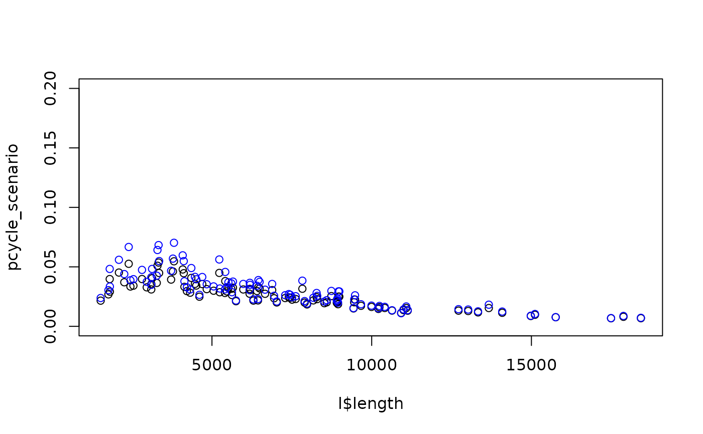

R/uptake.R
uptake_pct_govtarget.RdUptake model that takes distance and hilliness and returns a percentage of people likely to cycle along a desire line. Source: appendix of pct paper, hosted at: www.jtlu.org which states that:
uptake_pct_govtarget( distance, gradient, alpha = -3.959, d1 = -0.5963, d2 = 1.866, d3 = 0.00805, h1 = -0.271, i1 = 0.009394, i2 = -0.05135 ) uptake_pct_govtarget_2020( distance, gradient, alpha = -4.018, d1 = -0.6369, d2 = 1.988, d3 = 0.008775, h1 = -0.2555, h2 = -0.78, i1 = 0.02006, i2 = -0.1234 ) uptake_pct_godutch_2020( distance, gradient, alpha = -3.959, d1 = -0.5963, d2 = 1.832, d3 = 0.007956, h1 = -0.2872, i1 = 0.01784, i2 = -0.0977 )
| distance | Vector distance numeric values of routes. |
|---|---|
| gradient | Vector gradient numeric values of routes. |
| alpha | The intercept |
| d1 | Distance term 1 |
| d2 | Distance term 2 |
| d3 | Distance term 3 |
| h1 | Hilliness term 1 |
| i1 | document! |
| i2 | document! |
| h2 | Hilliness term 2 |
logit (pcycle) = -3.959 + # alpha (-0.5963 * distance) + # d1 (1.866 * distancesqrt) + # d2 (0.008050 * distancesq) + # d3 (-0.2710 * gradient) + # h1 (0.009394 * distance * gradient) + # i1 (-0.05135 * distancesqrt *gradient) # i2 pcycle = exp ([logit (pcycle)]) / (1 + (exp([logit(pcycle)])
uptake_pct_govtarget_2020() and
uptake_pct_godutch_2020()
approximate the uptake models used in the updated 2020 release of
the PCT results.
l = routes_fast_leeds pcycle_scenario = uptake_pct_govtarget(l$length, l$av_incline)#>pcycle_scenario_2020 = uptake_pct_govtarget_2020(l$length, l$av_incline)#># compare with published PCT data: l_pct_2020 = get_pct_lines(region = "isle-of-wight") # test for another region: # l_pct_2020 = get_pct_lines(region = "west-yorkshire") l_pct_2020$rf_avslope_perc#> [1] 0.33 0.34 0.35 0.63 0.63 0.47 1.45 0.37 0.63 1.43 0.38 0.65 0.67 0.51 1.26 #> [16] 1.49 3.63 3.61 2.72 2.26 2.64 2.81 1.83 1.79 1.56 2.82 2.57 2.54 2.11 3.53 #> [31] 2.88 2.48 2.81 2.97 2.19 2.29 1.91 2.84 2.73 2.69 2.27 3.60 3.35 3.55 3.72 #> [46] 1.85 2.09 3.51 1.83 2.42 2.43 2.39 2.35 2.15 3.78 2.36 3.82 3.25 3.25 3.55 #> [61] 3.04 3.11 2.66 2.64 2.57 2.79 3.40 3.87 4.15 2.86 2.94 3.60 2.60 2.89 3.05 #> [76] 3.47 2.94 2.80 3.49 3.94 3.28 3.27 3.75 3.05 3.12 2.41 2.45 2.39 3.00 3.37 #> [91] 3.85 3.44 3.63 3.23 3.23 2.62 2.60 2.53 2.81 3.42 3.29 3.47 1.96 2.70 2.89 #> [106] 2.97 2.92 2.80 2.34 3.10 3.50 2.10 2.69 2.88 3.08 3.03 2.91 2.25 2.81 3.59 #> [121] 2.53 2.54 2.47 3.34 2.79 3.19 2.07 2.57 2.84 2.61 3.10 2.52 1.01 2.80 3.06 #> [136] 2.53 2.31 2.62 2.96 1.96 2.67 3.13 3.27 3.80 4.35l_pct_2020$rf_dist_km#> [1] 15.00 12.40 11.50 15.40 12.80 12.50 18.60 11.70 14.60 19.80 11.20 14.00 #> [13] 12.50 12.20 19.60 18.30 1.10 1.94 18.00 13.00 17.10 18.30 7.48 7.26 #> [25] 7.89 12.90 18.80 18.80 17.40 3.06 17.70 12.70 16.80 18.00 7.16 6.81 #> [37] 7.71 11.90 18.50 18.50 17.10 11.10 6.14 10.20 11.40 6.75 8.13 18.90 #> [49] 8.49 14.70 16.90 16.90 18.80 17.60 5.09 1.82 1.07 10.70 12.10 7.57 #> [61] 12.50 18.70 9.15 12.20 12.90 19.50 18.40 4.39 5.59 5.93 7.32 13.10 #> [73] 7.68 13.90 12.00 13.30 14.50 15.40 17.70 1.98 10.10 11.50 8.54 11.80 #> [85] 18.00 9.12 12.20 12.80 18.60 17.90 12.30 12.60 6.97 13.00 19.20 7.95 #> [97] 11.00 11.70 19.40 18.40 1.85 17.10 2.35 19.50 8.55 11.60 11.60 13.50 #> [109] 10.90 16.00 18.70 1.62 18.30 7.33 13.30 13.30 15.10 11.70 17.10 18.50 #> [121] 8.30 11.30 12.00 19.20 17.60 6.65 14.10 13.00 14.90 10.20 15.60 11.00 #> [133] 11.50 19.20 16.20 3.12 3.81 13.00 11.50 2.04 10.40 8.83 9.84 7.93 #> [145] 7.38govtarget_slc = uptake_pct_govtarget( distance = l_pct_2020$rf_dist_km, gradient = l_pct_2020$rf_avslope_perc ) * l_pct_2020$all + l_pct_2020$bicycle govtarget_slc_2020 = uptake_pct_govtarget_2020( distance = l_pct_2020$rf_dist_km, gradient = l_pct_2020$rf_avslope_perc ) * l_pct_2020$all + l_pct_2020$bicycle mean(l_pct_2020$govtarget_slc)#> [1] 12.32634mean(govtarget_slc)#> [1] 11.76153mean(govtarget_slc_2020)#> [1] 12.29505